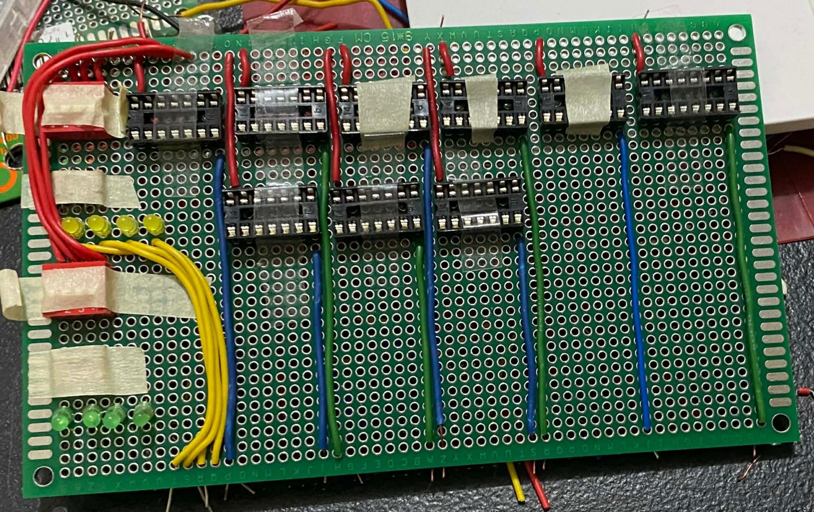
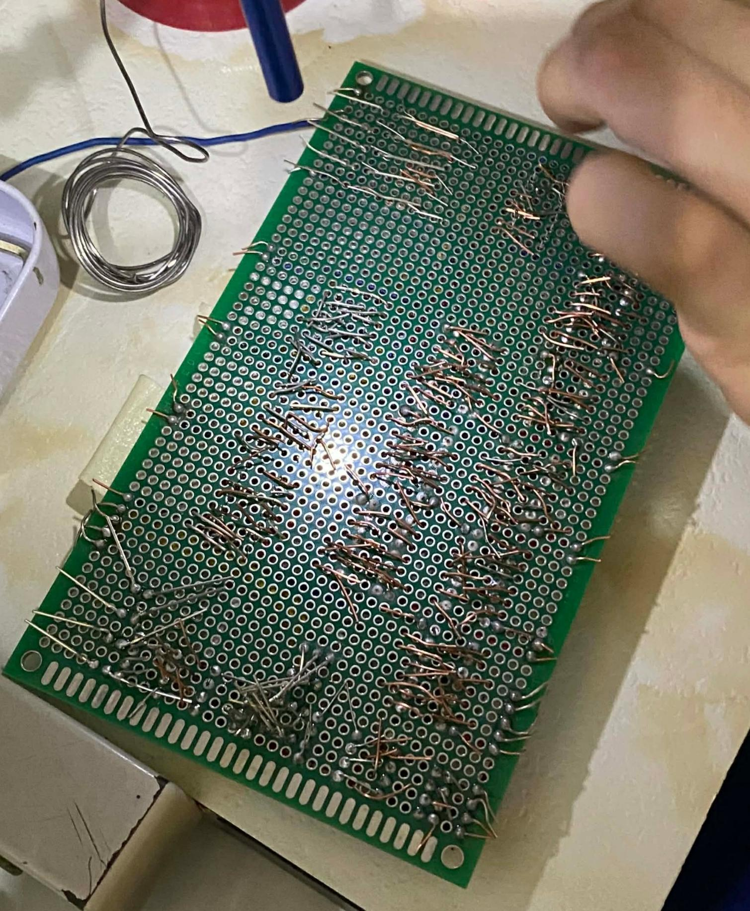
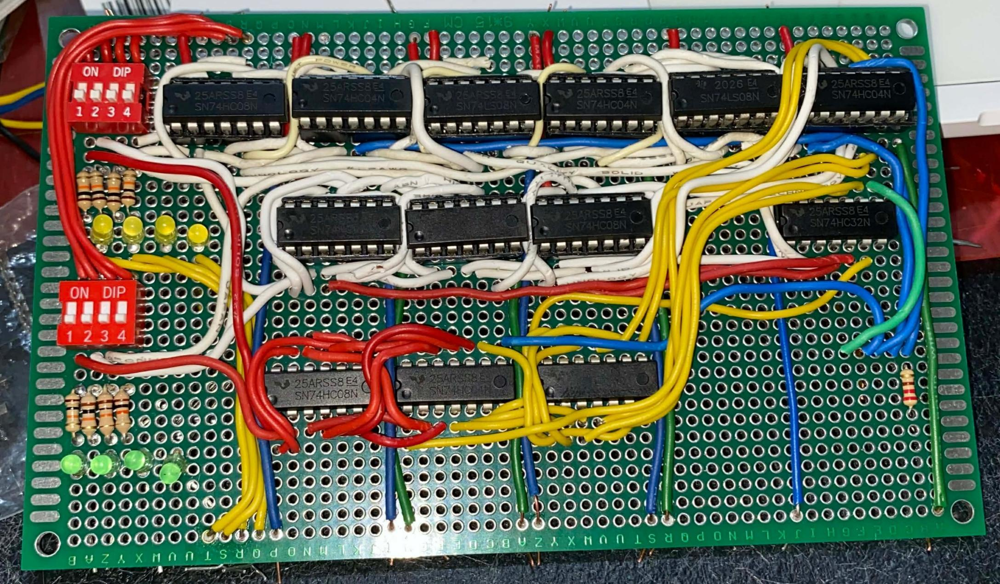

Before

Soldering

Semi-Finished

After



This is a 4 bit full adder that adds multi-bit binary numbers as the carry
This serves as the heart of a calculator. This circuit uses logic gates (typically XOR, AND, and OR) to perform binary addition. Because it is a "Full" adder, it can handle a "carry-in" from a previous column, allowing it to add multi-digit binary numbers up to (15 in decimal).